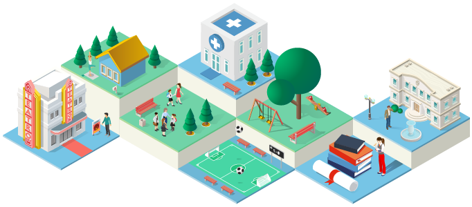

Resumen
Literatura sobre accesibilidad, otras métricas (ciudad de 15 minutos).
Listado de indicadores de accesibilidad
Proceso
Fórmula.
diagrama
Proceso General.
Insumos
Tipos de datos de línea: calles.
Tipo de dato: Grafos, rutas. Mejor ruta, asociado a un costo.
Fuentes externas: encuesta origen y destino, impedancias.
Insumos: equipamientos (levantamiento), calles (limpieza), manzanas.
Aplicación
Caso de Equipamiento de Áreas Verdes.
library (Accesibilidad)library (sf)
Linking to GEOS 3.9.1, GDAL 3.3.2, PROJ 7.2.1; sf_use_s2() is TRUE
Warning: package 'dplyr' was built under R version 4.2.3
Attaching package: 'dplyr'
The following objects are masked from 'package:stats':
filter, lag
The following objects are masked from 'package:base':
intersect, setdiff, setequal, union
Warning: package 'tmap' was built under R version 4.2.3
# manzanas <- st_read ("data/mz_iqq.shp" , quiet = TRUE ) %>% mutate (id = 1 : nrow (.))# equipamientos <- st_read ("data/av_iqq.shp" , quiet = TRUE )%>% mutate (id = 1 : nrow (.))# red <- st_read ("data/red.shp" , quiet = TRUE ) %>% mutate (id = 1 : nrow (.))
<- readr:: read_tsv ('data/impedancias.txt' ) %>% :: separate (tipo, c ("modo" ,"proposito" ), "_" )<- readr:: read_csv ("data/indice_accesibilidad.csv" ) %>% :: filter (itera_accesibilidad == 1 )
<- "IAV" <- Accesibilidad:: accesibilidad (impedancias, iterador, conf_indicador, mz, equip, red)
Cleaning graph...
Initial node ordering...
Contracting nodes...
Cleaning graph...
Initial node ordering...
Contracting nodes...
-----------LOCAL-----------
Calculando matrices de tiempo
Consolidando matrices distancia origen destino
Aplica funcion sensibilidad de costo (impedancia)
Calculando demanda potencial (cargas)
Calculo indicador
-----------METRO-----------
Calculando matrices de distancia y tiempo
Consolidando matrices distancia origen destino
Aplica funcion sensibilidad de costo (impedancia)
Calculando demanda potencial (cargas)
Calculo indicador
[1] "Los Resultados de Indicador SI Coinciden con lo Repartido"
[1] "Check Pass-- Indicador: IAV"
[1] "Las Manzanas con poblacion relevante cero no tienen indicador"
[1] "Check Pass -- Indicador: IAV"
[1] "Se agrego la accesibilidad de IAV"
Simple feature collection with 6 features and 17 fields
Geometry type: POLYGON
Dimension: XY
Bounding box: xmin: 379960.4 ymin: 7764928 xmax: 381960.7 ymax: 7765428
Projected CRS: WGS 84 / UTM zone 19S
ID_MANZ MANZ_EN COD_REG COD_PROV COD_COM ZONA AREA
1 1101021005003 URBANO 1 11 1101 1101021005 513023.198
2 1101021005021 URBANO 1 11 1101 1101021005 36705.997
3 1101021005016 URBANO 1 11 1101 1101021005 6125.433
4 1101021005013 URBANO 1 11 1101 1101021005 8032.154
5 1101021005015 URBANO 1 11 1101 1101021005 6420.489
6 1101021005022 URBANO 1 11 1101 1101021005 4649.203
NOM_REG NOM_PROV NOM_COM ID_MANZCIT TOTAL_V HOG_N PERSONAS
1 REGIÓN DE TARAPACÁ IQUIQUE IQUIQUE 1101021005003001 4 5 10
2 REGIÓN DE TARAPACÁ IQUIQUE IQUIQUE 1101021005021001 277 266 915
3 REGIÓN DE TARAPACÁ IQUIQUE IQUIQUE 1101021005016001 6 7 23
4 REGIÓN DE TARAPACÁ IQUIQUE IQUIQUE 1101021005013001 12 13 49
5 REGIÓN DE TARAPACÁ IQUIQUE IQUIQUE 1101021005015001 17 17 53
6 REGIÓN DE TARAPACÁ IQUIQUE IQUIQUE 1101021005022001 54 49 175
E4A18 E15A24 IAV geometry
1 1 0 0.5088645 POLYGON ((381959.8 7765083,...
2 280 105 0.8241874 POLYGON ((380236.6 7765250,...
3 2 6 0.8147927 POLYGON ((380332.4 7765174,...
4 23 7 0.8299646 POLYGON ((380492.1 7765127,...
5 8 12 0.8416961 POLYGON ((380332.9 7765046,...
6 58 21 0.8261619 POLYGON ((379984.1 7765040,...
tm_shape (ret) + tm_fill ("IAV" , style= "jenks" , palette= "RdYlGn" )
Interpretacion
Resultados e interpretación.